Identify binary data in grouped and ungrouped formats to model
Fit a GLM for binary/binomial outcomes
Recognise a GLM model being fit from the R code used to fit it
Interpret logit model coefficients in terms of the odds and odds ratios and
Test hypotheses and goodness of fit with appropriate methods
Obtain predicted probabilities and fitted values from a GLM for binary/binomial responses
Use logistic regression as a classification tool, and evaluate performance
Develop an awareness of issues with imbalance, separation and dispersion
This chapter we focus on modelling outcomes of interest that take one of two categorical values (e.g. yes/no, success/failure, alive/dead, 1/0). There are two ways that binary responses can be presented as data. Depending on whether there are repeated trials with identical covariates, or not.
The independent responses \(Y_i\) can either be
Ungrouped: each data point takes the value 1 or 0, typically with probabilities \(p_i\) and \(1-p_i\) respectively; or
Grouped: where \(Y_i\) is the number of 1’s in a given number of replicated trials \(n_i\). If the probability of each 1 is \(p_i\) and the probability of 0 is \(1-p_i\). Then \(Y_i \overset{indep}\sim \mathop{\mathrm{Bin}}(n_i, p_i)\).
Technically in both cases the distribution of the \(Y_i\) is binomial. In the ungrouped case each \(Y_i \overset{indep}\sim \mathop{\mathrm{Bernoulli}}(p_i)\), which is the same as the trivial \(\mathop{\mathrm{Bin}}(1,p_i)\) (i.e. one trial!). In the grouped case we already saw \(Y_i \overset{indep}\sim \mathop{\mathrm{Bin}}(n_i,p_i)\). This explains why this chapter is called binary/binomial response because actually they are essentially the same for the purposes of our modelling and analysis.
3.1 Binary response
We begin with a binary example, sometimes grouping isn’t natural so this is just how the data is.
Recall the example from an earlier chapter in which we modelled admission to medical school as a function of the applicant’s GPA. That was an example of a binary logistic regression model, in which the outcome of interest is either \(Y_i=1\) if the \(i\)th applicant was admitted to medical school or \(Y_i=0\) if the applicant was not admitted.
The distribution of such a binary response \(Y_i\) is assumed to be \(\mathop{\mathrm{Bin}}(1,p_i)\) so that \(E(Y_i)=p_i\).
The model equation is of the form \[
g(p_i)=\beta_0+\beta_1 x_i,
\] where in the example \(x_i\) is the \(i\)th applicant’s GPA. In the example we used the logit link, \(g(p_i)=\log\left(\dfrac{p_i}{1-p_i}\right)\), but we’ll see later in this chapter’s notes that additional choices are available. This chapter we will look at models for binary and binomial responses in more detail, starting with a binary logistic regression model for the Yanny-Laurel data.
3.1.1 Case Study: Yanny or Laurel?
Video 1: Yanny or Laurel? (3m19s)
This auditory illusion first appeared on the internet in May 2018. An explanation of why people hear different things can be found in this short video, just one of many internet sources discussing the phenomenon. The main reason behind the difference appears to be that as we age we lose the ability to hear certain sounds. To see if we could find evidence of such an age effect, we asked people (mainly students on the online MSc programme, and staff and PhD students at the School of Mathematics and Statistics at the University of Glasgow) to fill out a survey on what they hear. Below you can see summaries of the first 66 responses.
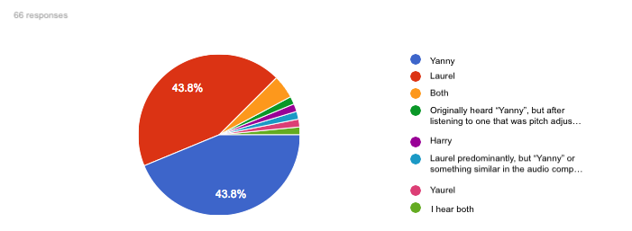
Figure 3.1: What people hear
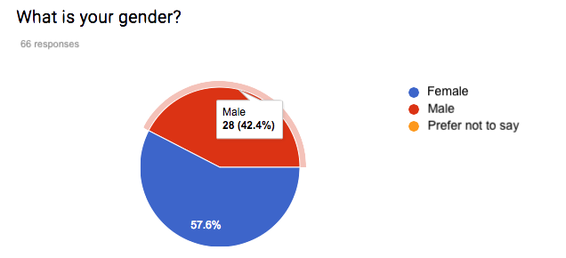
Figure 3.2: Gender demographics of survey respondents
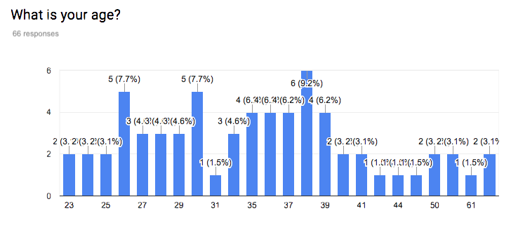
Figure 3.3: Age demographics of survey respondents
The proportions hearing “Yanny” and “Laurel” are very similar to each other, and there are some respondents who hear both or even something completely different. This may be because people do not listen to the audio file using the same device, something we couldn’t control for in our online survey. Initially we will ignore the responses that list something other than just “Yanny” or just “Laurel”, we have 53 observations left. Here are the first few rows of the data:
import pandas as pdyl_p = pd.read_csv('../resources/data/yl53.csv')yl_p.head()
For exploratory plots we can consider a boxplot for age, the continuous covariate, and a bar chart for gender, the categorical covariate.
yl.plot1 <-ggplot(yl, aes(y=age, x=hear)) +geom_boxplot()+xlab("What do you hear?")yl.plot1
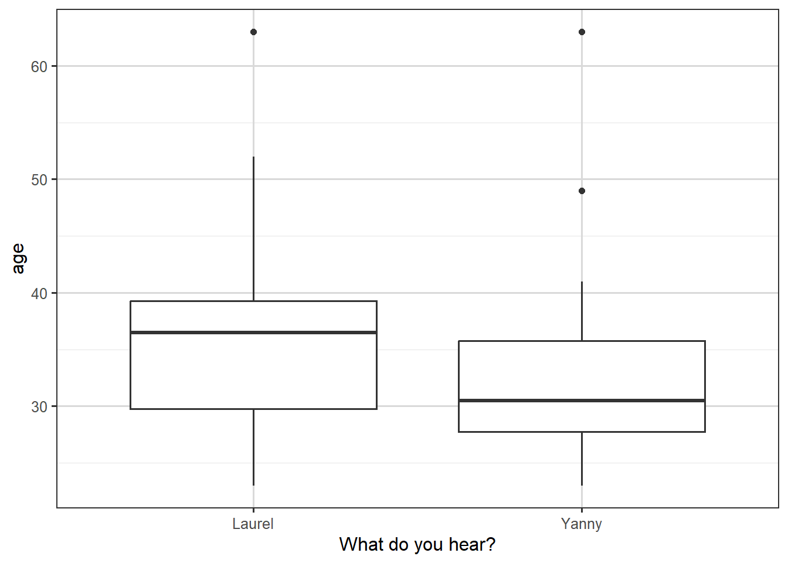
Figure 3.4: Box plot of what people hear, against their age.
We see in the boxplot that the people who hear “Yanny” are younger on average, but that there is a substantial overlap between the age distributions for the two types of response.
The plot of the proportions against gender is shown below. There is a slightly smaller proportion of men hearing “Yanny”, but the proportions look very similar overall.
library(sjPlot)
Attaching package: 'sjPlot'
The following object is masked from 'package:ggplot2':
set_theme
plot_xtab(yl$hear,yl$gender, show.values =FALSE, show.total =FALSE, axis.labels =c("Laurel", "Yanny"), axis.titles=c("What do you hear?"))
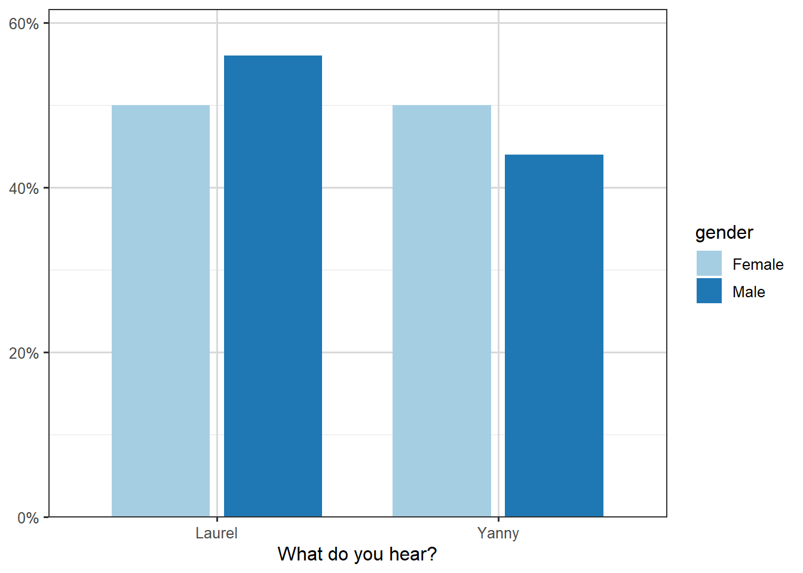
Figure 3.5: Illustration of breakdown of name heard by gender.
Let us look at a logistic regression model with age as the explanatory variable. Here \(Y_i=1\) if the \(i\)th respondent heard “Yanny” and \(Y_i=0\) if the \(i\)th respondent heard “Laurel”, with \(x_i\) being the respondent’s age for \(i=1,\dots, 53\). The model we will consider is of the form \[
g(p_i)\equiv \log\left(\frac{p_i}{1-p_i} \right)=\beta_0+\beta_1 x_i
\tag{3.1}\]
Call:
glm(formula = hear ~ age, family = binomial, data = yl)
Coefficients:
Estimate Std. Error z value Pr(>|z|)
(Intercept) 1.51874 1.21032 1.255 0.21
age -0.04812 0.03423 -1.406 0.16
(Dispersion parameter for binomial family taken to be 1)
Null deviance: 71.779 on 51 degrees of freedom
Residual deviance: 69.586 on 50 degrees of freedom
(1 observation deleted due to missingness)
AIC: 73.586
Number of Fisher Scoring iterations: 4
Notice that the age coefficient is negative, which when we look at Equation 3.1, is suggesting that older people are less likely to hear “Yanny”, but that this coefficient is not significant; the \(p\)-value of \(0.16\) is greater than \(0.05\), and so the 95% confidence interval of \(-0.04812\pm 1.96 \times 0.03423=(-0.0115,0.019)\) includes zero. Still, if we wanted to use the estimated coefficient to quantify the effect of age, we would need to look at \(\exp(-0.04812)=0.953\).
Suppose we consider two people with an age difference of one year, i.e. \(x_2-x_1=1\), then \[
g(p_2)-g(p_1) = \left(\beta_0+\beta_1 x_2\right)- \left(\beta_0+\beta_1 x_1\right) = \beta_1.
\]
So if we write \(\mathrm{logodds(p)}\) for \(\log\left(\frac{p}{1-p}\right)\), then \[
\mathrm{logodds}(p_2)-\mathrm{logodds}(p_1) = -0.04812,
\] alternatively, via exponentiation, \[
\frac{p_2}{1-p_2} \div \frac{p_1}{1-p_1} = e^{-0.04812} = 0.953.
\]
This suggests that for two people who differ by one year in age, the older person’s odds of hearing “Yanny” are 0.953 times those of the younger person. Or, the other way around, the odds of hearing “Laurel” get multiplied by a factor of \(\exp(0.04812)=1.049\).
For age it may make sense to look at wider differences. If we look at a ten-year age difference then \(g(p_2)-g(p_1)=10\beta_1\), so the odds multiplier becomes \(\exp(0.04812 \times 10)=1.618\), i.e. for two people who differ by ten years in age, the older person’s odds of hearing “Laurel” are \(1.618\) times those of the younger person.
Finally we can plot the predicted probabilities from this model as a function of age, we see that the predicted probability of hearing “Yanny” decreases with age: (which followed from the sign of our age coefficient)
yl <- yl |>drop_na()yl$pred <-predict(mod.yl, type ="response")head(yl)
ggplot(yl, aes(x = age, y = pred)) +geom_point() +geom_smooth(color ="blue", linewidth=0.5) +labs(x ="age (years)",y ="Predicted probability of hearing Yanny",title ="Model probability predictions of hearing Yanny by age" )
`geom_smooth()` using method = 'loess' and formula = 'y ~ x'
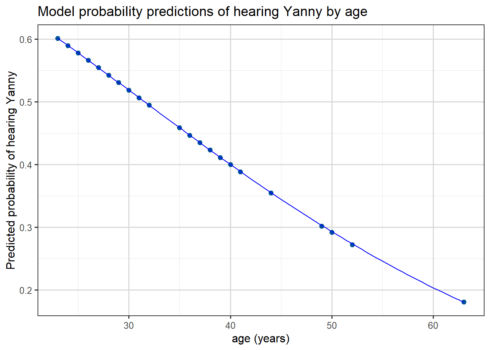
If we’re interested to see how well the predictions actually fit the data, we could plot predicted probabilities (of hearing Yanny) against actual observations like this:
p <-ggplot(yl, aes(x = pred,y =as.numeric(hear =="Yanny"))) +geom_jitter(alpha =0.5, height =0.2, size =5, shape =24, stroke =1, fill ="blue", color ="black" ) +labs(x ="Predicted probability",y ="Word heard",title ="Observed vs Predicted from the glm" )# + some extra styling
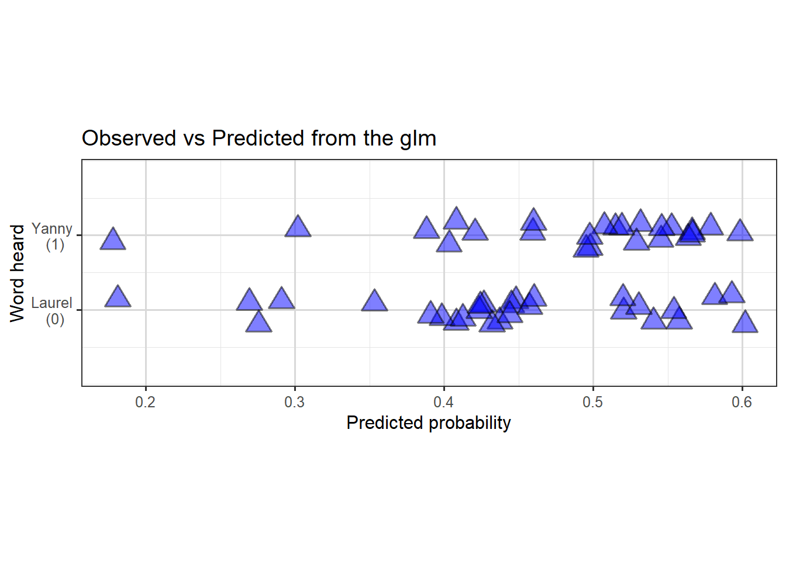
Figure 3.6: Scatterplot (with jitter) to show predicted probability of hearing Yanny, against true observations.
So we can see the model doesn’t fit the data particularly well, with perhaps slight evidence of a slighter denser cloud around \(0.4\) and another around \(0.6\) of predictions in the correct direction than elsewhere.
In other courses you will discuss how such probability predictions can be used in practice for classification problems. Often a default threshold of \(p=0.5\) is used and then classification via \(\hat{p} < 0.5 \Rightarrow\)0 and \(\hat{p} > 0.5 \Rightarrow\)1 is used, but other approaches also exist.
Task 1
Fit appropriate logistic regression models to explore if gender is related to whether people hear “Yanny” or “Laurel”.
Answer 1
We can fit a model with just gender as a predictor:
Call:
glm(formula = hear ~ gender, family = binomial, data = yl)
Coefficients:
Estimate Std. Error z value Pr(>|z|)
(Intercept) -0.07411 0.38516 -0.192 0.847
genderMale -0.16705 0.55739 -0.300 0.764
(Dispersion parameter for binomial family taken to be 1)
Null deviance: 71.779 on 51 degrees of freedom
Residual deviance: 71.689 on 50 degrees of freedom
AIC: 75.689
Number of Fisher Scoring iterations: 3
Call:
glm(formula = hear ~ gender + age, family = binomial, data = yl)
Coefficients:
Estimate Std. Error z value Pr(>|z|)
(Intercept) 1.62792 1.24392 1.309 0.191
genderMale -0.20637 0.56935 -0.362 0.717
age -0.04839 0.03404 -1.422 0.155
(Dispersion parameter for binomial family taken to be 1)
Null deviance: 71.779 on 51 degrees of freedom
Residual deviance: 69.454 on 49 degrees of freedom
AIC: 75.454
Number of Fisher Scoring iterations: 4
In both cases we see that there is no significant gender effect.
3.2 Binomial response
We now turn our attention to models for binomial responses. As mentioned earlier this typically arises from binary observations where there are duplicates in the covariates, i.e. repetitions of the experiment in some way.
3.2.1 Case Study: Yanny or Laurel – revisited
In the Yanny-Laurel example, suppose we created age groups and grouped the responses by gender and age combinations as shown below:
Table 3.1: Yanny-Laurel data grouped by gender and age group
Gender
Age Group
Total Yanny Responses
Total Responses
Female
19-30
7
11
Female
31-50
5
13
Female
51-65
1
3
Male
19-30
5
10
Male
31-50
6
14
Male
51-65
0
1
By grouping we have chosen to lose a little granularity of our data. Now instead of presenting multiple identical rows, we group responses that share the same covariate patterns (here we created six gender/age group patterns) and give \(y_i\), the number of outcomes of interest (here this is the number of Yanny responses), and \(n_i\), the total number of responses for the \(i\)th covariate pattern. When viewed in this way, each \(Y_i\) follows a \(\mathop{\mathrm{Bin}}(n_i,p_i)\) distribution and we can still fit a GLM to estimate \(p_i\).
Using the ordering or rows above, \(\hat{p}_5\) will be our estimated probability that (independently) each man aged between \(31\) and \(50\) hears “Yanny”.
Note we only have \(6\)\(y_i\) observations now. Technically there were duplicated covariates in our original data, e.g. four women of age 35 and 3 men of age 30 etc.., so we could have kept single-year age groups and still used a Binomial model, but this more aggressive grouping hopefully makes the approach clearer.
3.2.2 Case Study: Beetle mortality data
In this example we will look at a simple binomial model for similarly grouped data, starting with exploratory plots of the data, different choices of link function and hypothesis tests about terms in the model. We will also examine measures of goodness of fit of the model.
Video 2: Binomial response models applied to beetle mortality data (9m59s)
Apologies this is a morbid example
In 1930 as part of trials of chemical treatments for removing beetles from flour harvests experiments were performed to determine how much poisonous gas was needed. These were analysed in a paper by Bliss (The Calculation of the dosage-mortality curve, Annals of Applied Biology, 1935).
Data for this example consists of the number of dead beetles (killed) after five hours exposure to gaseous carbon disulphide at various concentrations (dose). The goal for this analysis is to model the probability of a beetle dying as a function of the carbon disulphide dose.
Our data has been grouped, for example from the fifth row, we see that \(63\) beetles were exposed to a dose level of \(1.8113\). Of those \(63\) we see that \(52\) died and thus \(11\) survived. As a proportion this means that \(\frac{52}{63}\approx 0.855\) died; so from our data if we are going to model that each beetle has a probability of being killed at this dose level then our MLE will turn out to be this value, \(0.855\). Importantly it’s this individual probability of death for each beetle, at the various dose levels which will be the the target of our modelling.
Before writing down our model, we can at least visualise the probability of the outcome of interest (beetles killed) by plotting the proportion killed for each dose against the dose. We will begin by adding a new column to our data, called propkilled representing the proportion killed at that dose level. We see that the proportion killed increases with increasing dose.
Figure 3.7: Scatterplot of the eight datapoints, of dose against Proportion killed.
There are two ways to define our response variable here, either as the result of each beetle’s exposure, or for the grouped data. Fundamentally for our modelling it normally makes sense to think of \(Y_i\) as each individual beetle experience, so that \(Y_i\) is binary, and then each row of Table 3.2 represents \(n_i\) rows with identical dose levels, where \(n_i\) is the number of beetles exposed to this dose. For example, the fifth row would be expanded into \(63\) individual response rows, each with dose of \(1.8113\), but then in the killed column we have \(52\)1’s and \(11\)0’s to represent that of the \(63\) rows it contains \(52\) examples of dead beetles and \(11\) that survived. But when it comes to the later GLM modelling, we will typically want to merge these binary variables into a Binomial.
Our model for \(Y_i\) is that \(Y_i \overset{indep}\sim \mathop{\mathrm{Bernoulli}}(p_i)\) where \(p_i\) is the probability of this particular beetle being killed, at its recorded dose level. Our model will be aim to find a formula for \(p_i\) in terms of dose. As before our model for \(p_i\) will use the logit function and a linear component, in particular
We remarked on this earlier, but as helpful repetition here.
Suppose we want our model to say that \(p_i \approx 1\), then taking a little mathematical liberty this means that \(\frac{p_i}{1-p_i} \approx +\infty\) and so \(\log\left(\frac{p_i}{1-p_i}\right) \approx +\infty\) too.
Conversely, if we wish for \(p_i \approx 0\), then \(\frac{p_i}{1-p_i} \approx 0\) and so \(\log\left(\frac{p_i}{1-p_i}\right) \approx -\infty\).
In the middle, when \(p_i \approx 0.5\), then \(\frac{p_i}{1-p_i} \approx 1\) and so \(\log\left(\frac{p_i}{1-p_i}\right) \approx 0\).
This means that as our linear component \(\beta_0 + \beta_1 x_i\) takes values in the range \(-\infty\) to \(0\) to \(\infty\) the predicted \(p_i\) values from the model will vary from \(0\) to \(1/2\) to \(1\), respectively.
This logit function is not the only function with this property, we will see some more later. Importantly having this property means that the full range of possible values of the linear component are all mapped to valid \(p_i\) values, unlike if we tried to model \(p_i\) directly with a standard linear model.
Having understood that on a fundamental level our responses \(Y_i\) are Bernoulli binary variables, we now return to the grouped interpretation. Let’s use \(\bar{Y}_i\) for the \(i\)-th row of our data table, and if we name our columns \(n_i=\) the number of beetles, and \(\bar{y}_i=\) the number killed, then \[
\bar{Y}_i \overset{indep}\sim \mathop{\mathrm{Bin}}(n_i, p_i)
\] becomes our model for the number of killed beetles at the \(i\)-th dose level.
The variable \(p_i\) has two valid intepretations, it’s the probability of an individual beetle being killed, or it’s the proportion of beetles at this dose level we expect to be killed. The \(n_i\) variables are known, but we aim to fit a model for estimating the \(p_i\) values, by dose level with a GLM, using our observed group response valued \(\bar{y}_i\).
This model can be fitted in R using the glm() function as follows:
m1 <-glm(cbind(killed, number-killed) ~ dose, family =binomial(link ='logit'), data=beetles)
Notice that we specify the response as a two-column matrix, the first being the number of successes (killed) and the second the number of failures (number-killed). That is, the first column is assumed by R to contain the 1’s and the second the 0’s for the purposes of direction in later interpretation.
The output is given below:
summary(m1)
Call:
glm(formula = cbind(killed, number - killed) ~ dose, family = binomial(link = "logit"),
data = beetles)
Coefficients:
Estimate Std. Error z value Pr(>|z|)
(Intercept) -60.717 5.181 -11.72 <2e-16 ***
dose 34.270 2.912 11.77 <2e-16 ***
---
Signif. codes: 0 '***' 0.001 '**' 0.01 '*' 0.05 '.' 0.1 ' ' 1
(Dispersion parameter for binomial family taken to be 1)
Null deviance: 284.202 on 7 degrees of freedom
Residual deviance: 11.232 on 6 degrees of freedom
AIC: 41.43
Number of Fisher Scoring iterations: 4
Supplement 2: Syntax for calling glm
We will get lots of practice of interpreting the output from R, in particular. We just note here that the syntax for calling for a glm model fit involves specifying a family parameter, so far in this chapter we have only seen binomial (which also covers binary). The default link function is the logit function, so you can omit the (link = "logit") and just write family = binomial if you wish. Recalling from the introductory lectures, it won’t be a surprise to you if we later use family = poisson for modelling count responses.
When calling glm() you either pass into the left-hand side of the formula a binary 0-1 variable, or you pass a two-column matrix where each row provides the number of successes and failures.
It can be confusing when first seeing this syntax that we are calling it binomial and not binary, since really in our modelling we are modelling binary response variables by grouping them. So fundamentally we are modelling binary data, like we did explicitly in the case where we directly pass a 0-1 variable, like in our Yanny-Laurel example. However, since binary data is a special case of binomial data, and the MLE finding GLM method works for binomial random variables (they’re in the exponential family!), R just treats both examples as binomial responses as it covers more cases.
From the glm() output we can get the estimates \(\hat{\beta}_0=-60.72\) and \(\hat{\beta}_1=34.27\) with standard errors 5.18 and 2.91 respectively. As it typical we don’t care much about the intercept, but we are interested in whether the dose variable is useful in the model.
We can test the hypothesis \(H_0: \beta_1=0\) by comparing \(z=\frac{\hat{\beta}_1}{\text{se}(\hat{\beta}_1)}=11.77\) with a standard normal distribution. Recall this is called the Wald test. Under \(H_0\) our output says the probability of observing this value or an even more extreme one is very small (less than \(2\times 10^{-16}\), see the \(p\)-value in the output), suggesting that it is unlikely that the data came from the model with \(\beta_1=0\). In other words, the dose coefficient is significant in the model.
Notice that the output also gives us the Residual deviance, taking value \(11.232\). This is the actual value of the theoretical concept defined as the binomial deviance in our introductory chapter.
We can use this value and the null deviance value in a likelihood ratio test. Under \(H_0: \beta_1=0\), this difference in deviances is a (log-) likelihood ratio test and thus should be have a \(\chi^2\)-distribution with \((n-1)-(n-p) = p-1\) degrees of freedom. We can also just read the degrees of freedom from the output, we have \(7-6=1\). Thus under \(H_0\), apparently
\[
284.202 - 11.232 = 272.97
\] has been drawn from a \(\chi^2_1\) distribution. This is incredibly unlikely, since
qchisq(df=1, p=0.95)
[1] 3.841459
so we once again conclude that including dose in the model is worthwhile.
We can also do a goodness-of-fit test to judge how good our model with dose is. The value of the residual deviance for this model is \(D = 11.23\). If the model is a good fit for the beetle data the deviance should approximately follow the \(\chi^2_{8-2}=\chi^2_6\) distribution. The degrees of freedom are determined as the number of distinct covariate patterns in the data (in this case just distinct doses, thus 8) minus the number of parameters in the model (intercept and dose coefficient, thus 2). The 95th percentile of the \(\chi^2_6\) distribution is
qchisq(df=6, p=0.95)
[1] 12.59159
and since \(11.23<12.59\), we don’t have evidence of lack of fit. However, we have to be careful when using the approximate chi-squared distribution as a measure of goodness of fit, because this approximation relies on having reasonably large fitted values. In particular, we cannot apply this for explicitly binary responses, we need aggregated response values, typically all at least \(\geq 5\) in value, as required for \(\chi^2\) goodness-of-fit tests.
For our case the grouping of the data yielded nice large cell sizes (\(n_i\) values). So we can compare this value to an appropriate \(\chi^2\) distribution.
For the logit model the fitted values can be obtained by taking the predicted probabilities, \(\hat{p}_i\), and multiplying them by the corresponding total number of beetles for \(i=1,\dots,8\):
All fitted values with the exception of the first are quite large (as a rule of thumb \(>5\) is sufficient), so in this case we can say that the chi-squared approximation seems plausible.
Last but not least, the logit model allows for an intuitive interpretation of the coefficient of dose in terms of the odds (\(\frac{p_i}{1-p_i}\)) of ‘success’. We usually interpret \(\hat{\beta}\) in a logit model by taking \(\exp(\hat{\beta})\). For the beetles this would give the odds ratio\[
\exp(\hat{\beta}_1)=\exp(34.270)=7.643141 \times 10^{14}.
\]
For each unit increase in dose, the odds of being killed get multiplied by this amount. Clearly this is silly here, as the a single unit increase is performing wild extrapolation, so we could instead try a more reasonable \(\Delta = 0.1\) change, then we obtain
\[
\exp(0.1 \times \hat{\beta}_1)=\exp(3.4270) \approx 30.8,
\] a \(30\)-times factor increase in the odds from increasing dose by \(0.1\). This increase is constant across the range, but recall is not a probability. An odds ratio can only be converted into a posterior probability if we also have the prior probability.
We have used the standard logit link here, which is the most commonly used link for binary/binomial data thanks to this interpretability of the output in evaluating odds of the outcome of interest.
However, there are situations where another link may also be suitable for a specific application. For instance, here we have what is called a dose-response model in which we look at the response as a function of increasing doses of a toxic substance. In this setting, it may be quite natural to consider the probit link function, \[
g(p_i)=\Phi^{-1} (p_i) = \beta_0 +\beta_1 x_i,
\]
where \(\Phi\) denotes the cumulative distribution function of the standard normal distribution. As a reminder, here are plots of the probability density function (p.d.f.) and cumulative distribution function (p.d.f.) of the standard normal distribution.
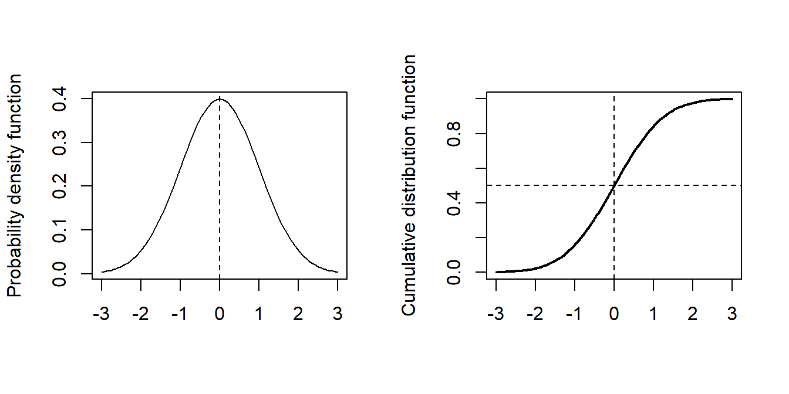
Figure 3.8: Normal distribution pdf and cumulative density plots
We can also re-parameterize this model as \[
p_i = \Phi \left(\frac{x_i-\mu}{\sigma} \right),
\] where we then define \(\beta_0 = -\frac{\mu}{\sigma}\) and \(\beta_1 = \frac{1}{\sigma}\).
One reason for such a re-parameterization is that it is known from other experiments what the median lethal dose is, namely the dose at which \(50\%\) of the beetle survive, is so then under our probit model we know \(\mu\) and we just need to estimate \(\sigma\). In our logit setup we don’t know the intercept or the dose coefficients, but we now know what \(-\beta_0/\beta_1\) needs to equal, which is not so helpful.
To use a probit link in R, is as simple as specifying the link option in the glm function to probit:
m2 <-glm(cbind(killed, number-killed) ~ dose, family =binomial(link ='probit'), data=beetles)summary(m2)
Call:
glm(formula = cbind(killed, number - killed) ~ dose, family = binomial(link = "probit"),
data = beetles)
Coefficients:
Estimate Std. Error z value Pr(>|z|)
(Intercept) -34.935 2.648 -13.19 <2e-16 ***
dose 19.728 1.487 13.27 <2e-16 ***
---
Signif. codes: 0 '***' 0.001 '**' 0.01 '*' 0.05 '.' 0.1 ' ' 1
(Dispersion parameter for binomial family taken to be 1)
Null deviance: 284.20 on 7 degrees of freedom
Residual deviance: 10.12 on 6 degrees of freedom
AIC: 40.318
Number of Fisher Scoring iterations: 4
From the output we get the estimates \(\hat{\beta}_1=-34.93\) and \(\hat{\beta}_2=19.72\) with standard errors 2.65 and 1.49 respectively. These differ from the coefficient estimates in the logit model because the model equation is totally different between the two. The interpretation of the coefficients also differs. We are still able to conduct hypothesis tests for the significance of the dose coefficient (small \(p\)-value, hence significant), and a goodness-of-fit test based on the residual deviance (\(D=10.12<12.59\) so no evidence of lack of fit). As the deviance is slightly lower than that of the logit model, we may even say that the fit is better for the probit model, but the difference is rather small.
Finally, a third choice of link that we could consider is the complementary log-log link. In this case the GLM equation is given by
Fitting this model in R is just a matter of specifying the link as follows:
m3 <-glm(cbind(killed, number-killed) ~ dose, family =binomial(link ='cloglog'), data=beetles)summary(m3)
Call:
glm(formula = cbind(killed, number - killed) ~ dose, family = binomial(link = "cloglog"),
data = beetles)
Coefficients:
Estimate Std. Error z value Pr(>|z|)
(Intercept) -39.572 3.240 -12.21 <2e-16 ***
dose 22.041 1.799 12.25 <2e-16 ***
---
Signif. codes: 0 '***' 0.001 '**' 0.01 '*' 0.05 '.' 0.1 ' ' 1
(Dispersion parameter for binomial family taken to be 1)
Null deviance: 284.2024 on 7 degrees of freedom
Residual deviance: 3.4464 on 6 degrees of freedom
AIC: 33.644
Number of Fisher Scoring iterations: 4
The parameter estimates are \(\hat{\beta}_1=-39.57\) and \(\hat{\beta}_2=-22.04\) with standard errors 3.24 and 1.80 respectively. The deviance is \(D=3.45\) which is quite a bit smaller than the deviances obtained with the other two link functions.
We can plot the fitted curves (on the probability scale) for each of the three regression models as follows:
Figure 3.9: Dose against Proportion Killed, with fitted curves by method.
We see that all three links give a good fit, with the complementary log-log being the best, although in practice we rarely choose the link based on fit. For one thing, the logit and probit are symmetric and can often be quite similar to each other, and for another, we tend to like the interpretability of the logit link and stick with it most of the time.
3.2.3 Choosing a link function
The investigation performed above is not a good general approach to fitting a GLM, we should not go fishing for a link function which somehow gives the lowest deviance. They were presented to show how different functions can be fitted in the same way.
In reality it is the form of the link function and domain knowledge which should shape your decisions.
Table 3.3: Link functions discussed
Function name
Formula
logit
\(g(p) = \log\left(\frac{p}{1-p}\right)\)
probit
\(g(p) = \Phi^{-1}(p)\)
cloglog
\(g(p) = \log\left(-\log\left(1-p\right)\right)\)
The logit is the recommended and default one used for binary responses.
The cloglog link, unlike the other two, is not symmetric. Furthermore, its also skew, if you insert \(p_i=0.5\) you do not get \(0\) like in the other functions. It also has a very slowly decaying tail for small \(p\). This means it is good at capturing a range of distinct small \(p\) values.
Thus cloglog is often recommended in extreme value theory, hazard and survival models, when \(p\) is often close to zero.
The probit model is known to perform well for dose-response and group-choice scenarios, where central values are more important and there is steep drop-off at the tails. So we should probably have used it for our Beetle data.
3.2.4 Case Study: The Challenger Disaster
This case study is mostly tasks for you to get practice
In January 1986, the space shuttle Challenger exploded shortly after launch. It was subsequently found that the rubber O-ring seals in the rocket boosters were susceptible to failing in low temperatures. At the time of the launch the temperature was 31 degrees Fahrenheit. Could the failure of the O-rings have been predicted? Data from the previous 23 missions shows some evidence of damage on some of the \(6\) O-rings on each shuttle, as well as the temperature during the shuttle launch. The data is available from library(faraway) and is called orings. The first column of the data gives the temperature at launch in degrees F and the second column gives the number of damage incidents out of \(6\) possible.
\(x_i\) the temperature (in degrees F) during launch for the \(i\)th mission, \(i=1,\dots,23\).
Response variable
\(y_i\) is the number of damaged O-rings (out of 6 total).
Model setup
the probability \(p_i\) of individual damage to each O-ring means \[
Y_i \overset{indep}\sim \text{Bin}(n,p_i)
\] with \(g(p_i)=\beta_0 + \beta_1 x_i\), and here \(n=6\).
The predicted probability of damage is very high for all models.
3.2.5 Case Study: The Titanic
For our final example, let us look at another famous disaster, the sinking of the Titanic.
Video 3: A logistic regression model for predicting which of the passengers of the Titanic were more likely to survive (8m04s)
On 15th April 1912, during its maiden voyage, the Titanic sank after colliding with an iceberg, killing 1502 out of 2224 passengers and crew. One of the reasons that the shipwreck led to such loss of life was that there were not enough lifeboats for the passengers and crew. Although there was some element of luck involved in surviving the sinking, some groups of people were more likely to survive than others, such as women, children, and the upper-class.
Our goal is to build a model to predict the survival of a passenger based on information about the passenger’s age, gender and ticket class. Here are the first few rows of the data:
So our dataset contains data on \(891\) passengers, and no rows contain data labelled NA.
The original dataset this comes from contains a few more columns, but we have already selected a subset.
Our response variable \(Y_i\) is the survival status for \(n=891\) passengers, taking value 1 for survived and 0 for died. Predictors include the passenger’s ticket class (passenger.class), gender, age, and so on.
We assume that \(Y_i \overset{indep}\sim \text{Bin}(1,p_i)\) where \(p_i\) is the probability of survival for the \(i\)th passenger. We fit a logistic regression model of the form \(g(p_i)=\log \left(\frac {p_i}{1-p_i}\right)=\textbf{x}^T_i \boldsymbol{\beta}\), where \(\textbf{x}_i\) is the vector of covariates for the \(i\)th passenger.
Figure 3.13: Survival rates by passenger ticket class
Table 3.4: Table showing numbers of cases split by passenger class and survival
Passenger Class
Died
Survived
Class 1
80
136
Class 2
97
87
Class 3
372
119
We can make various immediate observations, such as that the largest group amongst the passengers who died were third class passengers, while amongst those who survived the largest group was first class passengers.
Now let’s fit a model for survival (survived) with age, gender and passenger’s ticket class (passenger.class) as predictors:
Call:
glm(formula = survived ~ gender + passenger.class + age, family = binomial(link = "logit"),
data = titanic)
Coefficients:
Estimate Std. Error z value Pr(>|z|)
(Intercept) 3.54474 0.36537 9.702 < 2e-16 ***
gendermale -2.61131 0.18671 -13.986 < 2e-16 ***
passenger.class2 -1.12216 0.25773 -4.354 1.34e-05 ***
passenger.class3 -2.32917 0.24089 -9.669 < 2e-16 ***
age -0.03330 0.00737 -4.519 6.21e-06 ***
---
Signif. codes: 0 '***' 0.001 '**' 0.01 '*' 0.05 '.' 0.1 ' ' 1
(Dispersion parameter for binomial family taken to be 1)
Null deviance: 1186.66 on 890 degrees of freedom
Residual deviance: 805.29 on 886 degrees of freedom
AIC: 815.29
Number of Fisher Scoring iterations: 5
We see from the output that the coefficient for males is negative, indicating a lower chance of survival for male passengers. Similarly the coefficients for second and third class are negative, with the magnitude of the third class coefficient larger than that of the second class coefficient, suggesting that second class passengers had a worse chance of survival than first class passengers, and that third class passengers had an even worse chance. Finally the age coefficient is also negative, suggesting that older people were less likely to survive.
As a reminder here will be our systematic component: (writing C2, C3 for Class 2 and Class 3)
\(x_{i,C2}=1\) means passenger \(i\) is in Class \(2\),
\(x_{i,C3}=1\) means passenger \(i\) is in Class \(3\),
if both are zero then passenger \(i\) is Class \(1\).
Similarly, with gender, in this case \(x_{i,\text{male}}=1\) means passenger \(i\) is male.
To quantify the effect of each of these predictors, we look at odds ratios which can be computed as \(\exp(\hat{\beta})\). These are shown in the plot below.
plot_model(mod.titan, show.values=TRUE, title ="Odds ratios from GLM predictor coefficients")
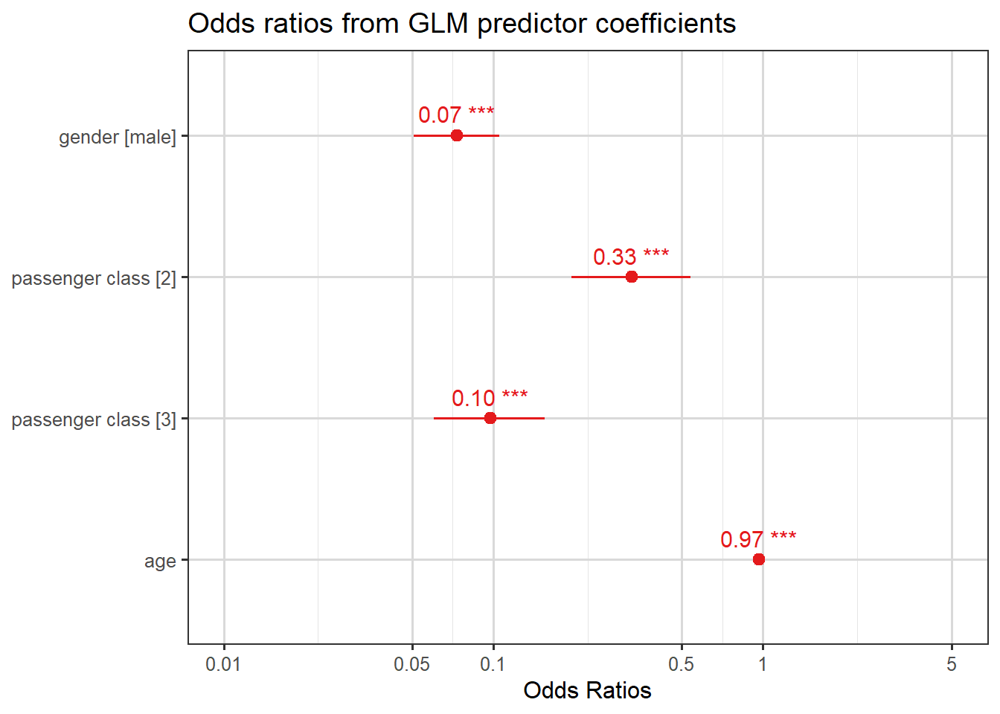
Here are four interpretations from these odds ratios:
men’s odds of survival were \(0.07\) times those of women;
third class passengers’ odds of survival were \(0.10\) times those of first class passengers;
second class passengers’ odds of survival were \(0.33\) times those of first class passengers; and
for each year increase in the passenger’s age, the odds of survival decrease (get multiplied by a factor of \(0.97\)).
Note that the plot also includes confidence intervals for the odds ratios. To illustrate how these are calculated, let’s take the coefficient of gender as an example:
summary(mod.titan)$coefficients["gendermale", ]
Estimate Std. Error z value Pr(>|z|)
-2.611315e+00 1.867088e-01 -1.398603e+01 1.897064e-44
This is the coefficient for male relative to the base level which was female for this data. Looking back at Equation 3.2, which we summarise as
Thus the odds ratio comparing men to women is between \(0.05\) and \(0.10\) (the point estimate was \(e^{-2.61131} = 0.07\)): so our conclusion is that our \(95\%\) confidence interval is that
the odds of survival for men are between \(0.05\) and \(0.10\) times the odds for women.
Note, we still aren’t talking about specific probabilities, but if we did know the probability of survival of a random woman, we could use the \(\frac{q}{1-q}\) formula to find their odds, and then deduce a predicted probability male interval.
We can also plot the predicted probabilities of survival against the passenger’s age by the passenger’s gender and ticket class. We will use the sjPlot package in R to shortcut designing our graph, Figure 3.14 shows pointwise confidence intervals for the predicted probabilities.
Some of the focal terms are of type `character`. This may lead to
unexpected results. It is recommended to convert these variables to
factors before fitting the model.
The following variables are of type character: `gender`
Data were 'prettified'. Consider using `terms="age [all]"` to get smooth
plots.
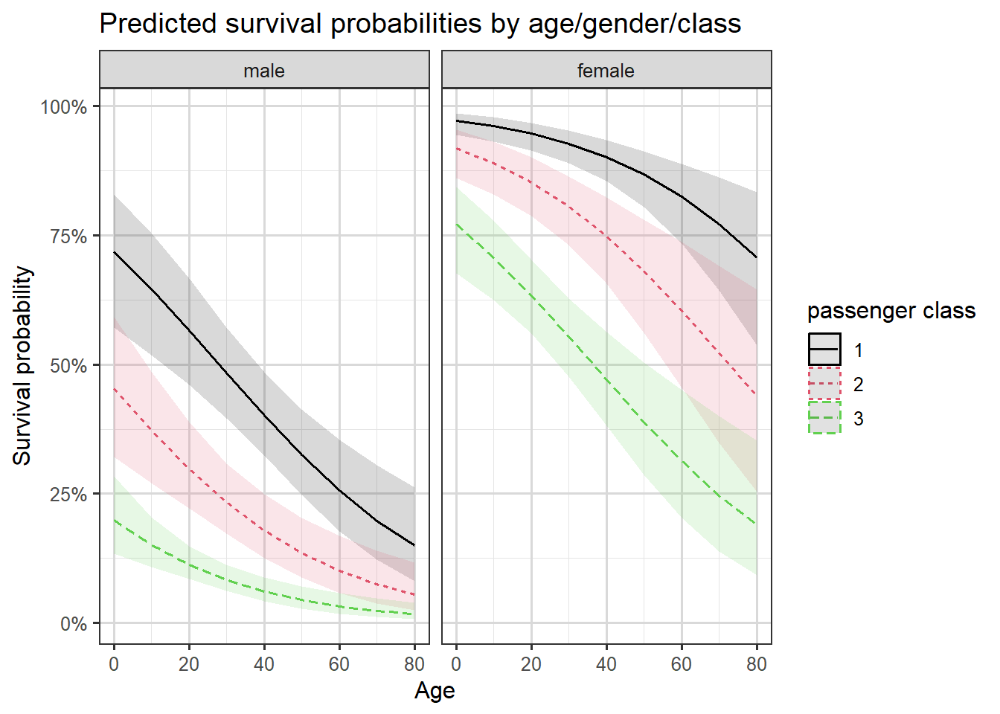
Figure 3.14: Predictions with confidence intervals by age, class and gender.
We see the gender and class differences in survival we have already discussed, and also that survival probabilities decrease by age.
3.3 Probabilities, odds, odds multipliers and odds ratios
In logit models, we interpret coefficients in terms of the odds, and terms involving the word “odds” inevitably come up when describing the model fit. Here we present all of these terms in the same place and describe the relationships between them.
Definition 1: Odds and Log-Odds
The odds are defined as \[
\text{Odds}=\frac{p}{1-p}
\] where \(p\) is the probability of the outcome of interest.
We can express the probability in terms of the odds by rearranging this equation to \[
p = \frac{\text{Odds}}{\text{Odds}+1}.
\tag{3.3}\]
The log odds (sometimes written LO) is merely the logarithm of the odds, so \[
\text{LO} = \log\left(\text{Odds}\right) =\log\left(\frac{p}{1-p}\right).
\tag{3.4}\]
Note that in logistic models it’s the log odds from Equation 3.4 which is being modelled directly as the linear component. Recall that across all observations, we are looking for maximum likelihood estimates for the \(\boldsymbol{\beta}\) in
Warning: The \(\beta\) coefficients will be log odds ratios.
Suppose we have a predictor with two levels, say gender in the Titanic example, which is coded 1 for men and 0 for women. This means the overall value of the linear component will be larger by \(\beta_{\text{male}}\) for a man than for a woman (lower if \(\beta_{\text{male}}<0\)).
This means that the gender coefficient is the difference between
\(\log\left(\text{Odds}_1\right)=\log\left(\frac{p_1}{1-p_1}\right)\) (the log odds for men) and
\(\log\left(\text{Odds}_0\right)=\log\left(\frac{p_0}{1-p_0}\right)\) (the log odds for women).
And since, by log laws, \(\log\left(\text{Odds}_1\right)-\log\left(\text{Odds}_0\right)=\log\left(\dfrac{\text{Odds}_1}{\text{Odds}_0}\right)\), the gender coefficient is equal to the log odds ratio: \[
\beta_{\text{male}}=\log\left(\dfrac{\text{Odds}_1}{\text{Odds}_0}\right)=\log \left( \dfrac{\frac{p_1}{1-p_1}}{\frac{p_0}{1-p_0}}\right).
\]
By exponentiating both sides we see that \(\exp(\beta)\) is the odds ratio for comparing the two levels of the predictor (here men and women) in terms of the odds of the outcome of interest.
And since we can express this as \(\text{Odds}_1=\exp(\beta) \times \text{Odds}_0,\) we also call \(\exp(\beta)\) the odds multiplier.
If the explanatory variable \(x\) in the model is continuous rather than a factor, the odds multiplier gives the effect of an increase of one unit in \(x\) on the odds of the outcome of interest.
For the Titanic example, a year increase in age is associated with multiplying the odds of survival by a factor of \(\exp(-0.03330)=0.97\), perhaps more usefully we can consider a ten-year increase in age being associated with a \(\exp(10\times -0.03330)=0.717\)odds multipler.
The following video, in which Prof. David Spiegelhalter talks about odds ratios and their interpretation, may be of further use in clarifying these concepts.
Video 4: Prof. David Spiegelhalter on odds ratios. (7m03s)
3.4 Model checking and diagnostics for logistic regression
In our theoretical GLM introduction we saw that the deviance, \(D\), is one possible goodness-of-fit statistic for GLMs. Here’s a reminder
Definition: Deviance (reminder)
The deviance, \(D\), is defined as \[
D=2\log \lambda =2\left[ l(\hat{\boldsymbol{\beta}}_{\max};\boldsymbol{y})-l(\hat{\boldsymbol{\beta}};\boldsymbol{y})\right]
\] where \(l(\hat{\boldsymbol{\beta}}_{\max};\boldsymbol{y})\) is the maximised log-likelihood for the saturated model and \(l(\hat{\boldsymbol{\beta}};\boldsymbol{y})\) is the maximised log-likelihood for the model of interest.
A second goodness-of-fit measure is the Pearson chi-squared statistic.
Definition 2: Pearson’s chi-squared statistic
Pearson’s chi-squared statistic is defined as \[
X^2= \sum_{i=1}^n \frac{(y_i-n_i\hat{p}_i)^2}{n_i\hat{p}_i(1-\hat{p}_i)},\quad i=1,\dots,n
\] where
\(y_i\) represents the observed number of successes,
\(n_i\) is the number of trials, and
\(\hat{p}_i\) the fitted probabilities for the \(i\)th covariate pattern.
Theorem 1: Sampling/asymptotic distribution of \(X^2\)
\(X^2\) is asymptotically equivalent to the deviance. Therefore, under \[
H_0: \text{the model fits the data well},
\]\(X^2\) is approximately distributed as \(\chi^2_{n-p}\) where \(n\) is the number of parameters in the saturated model (usually equal to the number of observations), and \(p\) is the number of parameters in the model of interest. This results holds for relatively large fitted values.
Example 1: Beetle data, revisited
Suppose that we would like to assess the fit of the logistic model in the beetle mortality case study seen earlier. The data and fitted values obtained from the logit model were as follows.
Table 3.5: Original Beetle data, plus fitted predictions
\(x_i\)
\(n_i\)
\(y_i\)
\(\hat{y}_i=n_i \hat{p}_i\)
1.6907
59
6
3.46
1.7242
60
13
9.84
1.7552
62
18
22.45
1.7842
56
28
33.90
1.8113
63
52
50.10
1.8369
59
53
53.29
1.8610
62
61
59.22
1.8839
60
60
58.74
We wish to test \[
H_0: \text{the model fits the data well}
\] against \[
H_1: \text{the model does not fit the data well}
\]
We can view the following sum as either a weighted sum of squares (note the denominator is why we say weighted), \[
S_w = \sum_{i=1}^n \frac{(y_i-n_ip_i)^2}{n_ip_i(1-p_i)}
\] or we can just see this as \(X^2\). It turns out that using the MLE approach to find \(\hat{p}_i\) is equivalent to minimizing this \(S_w\) expression.
When \(X^2\) is evaluated at the estimated expected frequencies, the statistic is \[
X^2= \sum_{i=1}^n \frac{(y_i-n_i\hat{p}_i)^2}{n_i\hat{p}_i(1-\hat{p}_i)}
\]
which will be approximately \(\chi^2_{n-p}\) if the model is correct.
For the beetle mortality example, \(D=11.23\) and \(X^2=10.03\). Both are large, but not surprisingly so, compared with a \(\chi^2_6\) distribution. The 95th percentile of the \(\chi^2_6\) distribution is above both values:
qchisq(p=0.95, df=6)
[1] 12.59159
Therefore there is no evidence of lack of fit for the logit model.
Note: The chi-squared approximation for the deviance and \(X^2\) rely on having expected frequencies (fitted values) that are not too small. It should be ok to use for checking the fit of the beetle mortality model, but if each observation has a different covariate pattern such as that \(y_i\) is either 0 or 1, as in the Yanny-Laurel example, then the \(\chi^2\) approximation theory isn’t valid and neither \(D\) nor \(X^2\) provide a useful measure of goodness of fit. For this reason, a modification of the chi-squared test has been proposed…
3.4.1 Hosmer-Lemeshow goodness of fit test
Simply, this method proposes merging similar fitted values into groups, after fitting the model. The aim is that no group has a small expected size, allowing a \(\chi^2\) approximation to be used for goodness-of-fit purposes.
Suppose that for a model for binary responses we wish to test \[
H_0: \text{the model fits the data well}
\] i.e. observed and expected response frequencies are close to each other, versus \[
H_1: \text{the model is not a good fit for the data}
\] i.e. observed frequencies are far from expected frequencies.
Definition 3: The Hosmer-Lemeshow method
The Hosmer-Lemeshow test statistic is calculated as follows:
Order the fitted values.
Group the fitted values into \(g\) classes (typically we use \(g\) between \(6\) and \(10\)) of roughly equal size.
Calculate the observed and expected number in each group
Perform a chi-squared goodness-of-fit test, with \(\chi^2_{g-2}\) as the reference distribution.
Example 2: Yanny-Laurel revisited
Returning to the Yanny-Laurel example we saw earlier, let’s have a look at the goodness of fit of the binary logistic regression model predicting the probability of hearing “Yanny” as a function of the age of the participant.
We will use a pre-built an implementation of the Hosmer-Lemeshow test to check for evidence of lack of fit in the model.
library(generalhoslem)
Loading required package: reshape
Attaching package: 'reshape'
The following objects are masked from 'package:tidyr':
expand, smiths
The following object is masked from 'package:dplyr':
rename
Loading required package: MASS
Attaching package: 'MASS'
The following object is masked from 'package:dplyr':
select
Notice that with \(10\) groups the bins not only contain some bins of size under \(5\), but all of them are! So this is too many groups. Our dataset is very small for this test, and we need to go down to around \(g=4\) to ensure bins are all at least \(5\) (approximately).
Hosmer and Lemeshow test (binary model)
data: numeric_obs, yl$pred
X-squared = 4.5183, df = 2, p-value = 0.1044
At \(g=4\) we have so few bins that the power of this test is getting pretty weak. Our large \(p\)-value indicates no particular lack of fit.
There are other tests that have since been developed, and perhaps some of those would actually be better suited in this example (but not covered in this course).
Notes on the Hosmer-Lemeshow test:
Failing to reject \(H_0\) does not mean that the fit is good.
The power of the test can be too small to detect lack of fit.
How the fitted values are grouped together matters – use different values of \(g\) and see if that changes the conclusion.
Our preference would be for a large \(g\), which still keeps bin sizes large.
Other tests have been developed since the Hosmer-Lemeshow test, which are perhaps better
3.4.2 Likelihood ratio chi-squared statistic
The likelihood ratio chi-squared statistic is defined as twice the difference in maximised log-likelihood under the model of interest and under the null (minimal) model.
Under the null model we pick a single value \(\tilde{p}=\sum y_i/\sum n_i\).
Under our model of interest we let \(\hat{p}\) be the MLE.
Then \[
C=2 \left[l\left(\hat{\mathbf{p}};\mathbf{y}\right)-l\left(\tilde{\mathbf{p}},\mathbf{y}\right)\right]
\] should be approximately \(\chi^2_{p-1}\) if all the \(p\) parameters except the intercept \(\beta_0\) are zero.
We have already used this in models of the form \(g(\mu)=\beta_0+\beta_1 x\) with null hypothesis: \(\beta_1=0\).
Key Idea
We can also use likelihood ratio statistics in model selection, if those models are nested (i.e. one is a special case of another). Then we can subtract their log-likelihoods and compare to the a \(\chi^2\) with degrees of freedom equal to the difference in number of parameters being estimated.
3.4.3 AIC and BIC
The Akaike information criterion (AIC) and the Schwartz or Bayesian information criterion (BIC) are other goodness-of-fit statistics based on the log-likelihood function with adjustment for the number, \(p\), of parameters estimated. You will have met these before in the study of linear models.
\(-2l\left(\hat{\mathbf{p}};\mathbf{y}\right) + 2p \times \log(\text{number of observations})\)
Note that the R output we saw earlier reported the AIC value in the summary() command. R doesn’t routinely also return the exact likelihood or log-likelihood, but we could calculate it with the AIC formula, since we know \(p\) as well.
The largest likelihood values will contribute to large negative values of these criteria (unless \(p\) is very large). So it’s small value of these statistics which indicate that there is no lack of fit in the model. These statistics could be (and are!) used as model selection criteria, especially when the models under comparison are not nested.
Key Idea
AIC is more heavily used, and it provides us a way to compare two models which are not nested, with respect to some criterion. It is still a relatively arbitrary way to penalize overfitting by way of adding \(+2p\), but it is known to work well.
3.4.4 Residuals
There are two main forms of residuals for logistic regression: deviance and Pearson (or chi-squared) residuals. These are the contributions to \(D\) and \(X^2\) respectively from each distinct covariate pattern.
Suppose there are \(m\) distinct covariate patterns and that \(Y_k\), \(n_k\) and \(\hat{p}_k\) are the number of successes, the number of trials and the estimated probability of success for the \(k\)th covariate pattern, where \(k=1,2,\ldots,m\). We didn’t actually need to group identical covariate patterns, but it can make sense in later residual comparisons.
Definition 4: Pearson residuals
The Pearson or chi-squared residual is \[
X_k=\frac{y_k-n_k \hat{p}_k}{\sqrt{n_k\hat{p}_k(1-\hat{p}_k)}}.
\]
The standardised Pearson residual is \[
r_{Pk}=\frac{X_k}{\sqrt{1-h_k}},
\] where \(h_k\) is the leverage which is obtained from the hat matrix.
The standardised deviance residual is \[
r_{Dk}=\frac{d_k}{\sqrt{1-h_k}}.
\]
The residuals can be plotted against continuous covariates to check the linearity assumption, and in the order of the measurements to check for serial correlation. Normal probability plots could also be used as the residuals should be approximately \(N(0,1)\) provided the numbers of observations for each covariate pattern are not too small.
However, the residuals are not informative if the response is binary of if \(n_k\) is small for most covariate patterns. So residual plots wouldn’t be that useful for the Yanny-Laurel data where the outcome variable is binary and the predictor (age) is continuous, but they could be used for the beetle data.
As in linear regression, the leverage of individual observations plays a role here too. Recall that high leverage points will typically exhibit lower residual values as the model is essentially trying harder to fit these points, since there are larger penalties for missing. Thus the denominators in the definitions, using the leverage values – as in linear regression – accounts for this effect. These standardized residuals then become comparable with each other, and under correct models are approximately \(\sim N(0,1)\). Thus plots of all standardized residuals against covariate value can be used to identify outliers or poorly fitting observations.
Task 5
Compare the residual plots from the Yanny-Laurel model with those from the logit model used for the beetle data.
Figure 3.16: Deviance residual plot, against predicted probability for the Beetles data.
We can see that the beetle model residuals scatter around zero in a similar way to a linear regression model, while for the Yanny-Laurel model they follow a distinct pattern.
3.5 Logistic regression as a classifier
Suppose that we have data \(y_i\) taking the value 1 for Class A and 0 for Class B, and that we have built a logistic regression model predicting \(p_i=P(Y_i=1)\) as a function of a number of available explanatory variables.
To classify an observation into one of the two classes using such a logistic regression model, we can choose a value \(c\) and then use a decision rule such as
if \(\hat{p}_i \geq c\) the \(i\)th observation gets classified into Class A, and
into Class B otherwise.
The constant \(c\) is the decision threshold, and it is typically set at \(0.5\). For example, if the model predicts a probability of \(0.7\) for an observation, and the threshold is \(0.5\), we would classify that observation as belonging to Class A. Conversely, a predicted probability of \(0.2\) would result in a classification into Class B.
We can adjust the threshold depending on the specifics of the application. A higher threshold would lead to fewer false positives but more false negatives, and vice versa. There is a trade-off to consider here, and the choice is often made based on the cost associated with each type of error. Datasets with class imbalance are the typical real-world situation where thresholds need to be thought more deeply about.
One way to assess the predictive power of a model and to come up with an “optimal” decision threshold, is to look at the receiver operating characteristic (ROC) curve. The curve is created by evaluating the performance of the classifier as we vary the threshold \(c\) from \(0\) (where everything gets classified as Class A) to \(1\) (where everything is classified as Class B).
Using the proportion of positive data points that are correctly predicted as positive (true positive rate) and the proportion of negative data points that are incorrectly predicted as positive (false positive rate), one can generate a graph that shows the trade-off between the rate at which the model predicts the response correctly versus predicting it incorrectly. On the horizontal axis of the ROC curve we have the false positive rate and on the vertical axis the true positive rate. The area under the ROC curve, known as AUC (area under curve) or more typically AUROC, is used as a measure of a diagnostic test’s discriminatory power. An AUROC value of \(0.5\) indicates that the predictive model is of no discriminative value, this is the score we would expect from classifying by just tossing a fair coin repeatedly.
We would like models to perform better than a random guess, so we would like the AUROC to be greater than \(0.5\). We can also compare the ROC curves for different models to help us choose between them.
Example 3
Here is one way to produce the ROC curve and AUC for the model fitted to the Titanic data:
library(pROC)
Type 'citation("pROC")' for a citation.
Attaching package: 'pROC'
The following objects are masked from 'package:stats':
cov, smooth, var
titanic$Prid <-predict(mod.titan, titanic, type ="response")roc_obj <-roc(titanic$survived, titanic$Prid)
Setting levels: control = 0, case = 1
Setting direction: controls < cases
auc_value <-auc(roc_obj)# Neat ggroc function provided by pROC packageggroc(roc_obj, color ="#005398") +xlab("False Positive Rate") +ylab("True Positive Rate") +ggtitle(paste("Area under the ROC curve =", round(auc_value,3)))
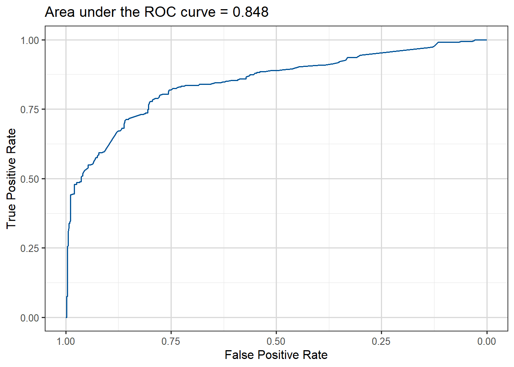
Figure 3.18: ROC curve for Titanic survival prediction model fitted.
The area under the curve is about 0.85, which is reasonable considering that we have only used three of the predictors available in the data.
We can also change the decision threshold according to some criterion. Let’s say that we want to keep the false positive rate lower than 20%, in other words we don’t want to incorrectly predict that a passenger survived with a probability of more than \(0.2\).
In creating the ROC curve our code will already have found the False Positive Rate (FPR) and True Positive Rate (TPR) for a fine grid of possible thresholds from \(0\) to \(1\), so they have already been calculated, we just need the correct syntax to read them.
In the case of the pRoC package we can access them via $thresholds like this:
Table 3.6: Lowest cutoff thresholds with FPR under 20%
cut
TPR
FPR
0.4352567
0.7660819
0.1967213
0.4393558
0.7631579
0.1967213
0.4434600
0.7543860
0.1967213
0.4453992
0.7485380
0.1967213
0.4460984
0.7485380
0.1948998
0.4467732
0.7426901
0.1948998
Note that library(pROC) is just one package that produces ROC curves. Other recent packages include library(plotROC) or library(ROCit).
As a final note, there is a lot more that one can do with the Titanic dataset. We have only used three explanatory variables and one could try to improve predictive performance by adding more terms to the model. In fact there is a prediction competition on this dataset, with the data we’ve used as the training set and also a test set available on which the predictions are made. This is why the set we have worked with is smaller than those who have seen the set before were expecting, as this was just a training set.
Example 4: Possum classification
This data set records variables of common brushtail possums found in various Australian regions (Source: OpenIntro Statistics). We consider 104 brushtail possums from two regions in Australia, where the possums may be considered a random sample from the population.
The first region is Victoria, which is in the eastern half of Australia and traverses the southern coast. The second region consists of New South Wales and Queensland, which make up eastern and northeastern Australia. The outcome variable, called pop, takes value Vic or Other when a possum is from Victoria or not.
In this example, we want to demonstrate how to build a model that differentiates between the possums in Victoria and from those outside Victoria, based on the variables provided.
Table 3.7: First few rows of Possum data
site
pop
sex
age
headL
skullW
totalL
tailL
1
Vic
m
8
94.1
60.4
89.0
36.0
1
Vic
f
6
92.5
57.6
91.5
36.5
1
Vic
f
6
94.0
60.0
95.5
39.0
1
Vic
f
6
93.2
57.1
92.0
38.0
1
Vic
f
2
91.5
56.3
85.5
36.0
1
Vic
f
1
93.1
54.8
90.5
35.5
We can explore the relationships between the variables by looking at plots:
Code
library(GGally)
Attaching package: 'GGally'
The following object is masked from 'package:faraway':
happy
`stat_bin()` using `bins = 30`. Pick better value `binwidth`.
`stat_bin()` using `bins = 30`. Pick better value `binwidth`.
`stat_bin()` using `bins = 30`. Pick better value `binwidth`.
`stat_bin()` using `bins = 30`. Pick better value `binwidth`.
`stat_bin()` using `bins = 30`. Pick better value `binwidth`.
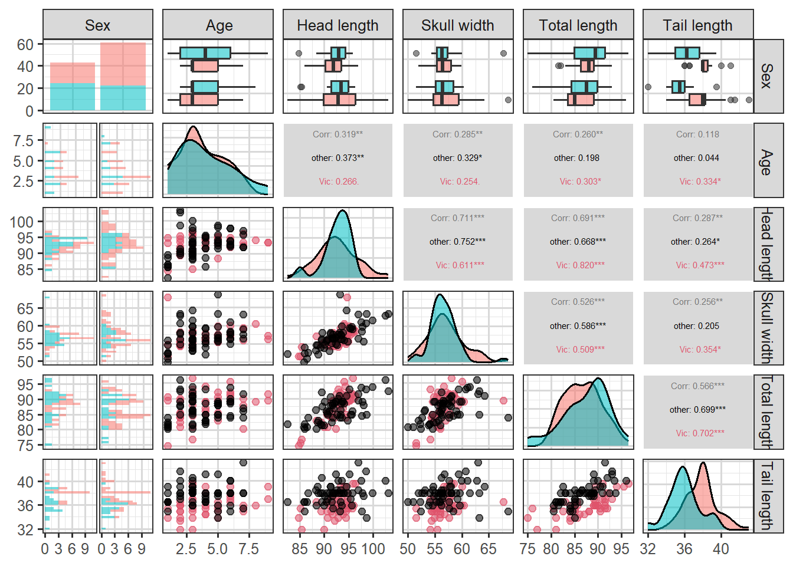
Figure 3.19: An all-pairs plot for the Possum data
We can use logistic regression to classify the possums in the two regions. We use population as the outcome variable and five predictors: sexm (an indicator for a possum being male), head_length, skull_width, total_length, and tail_length. The full logistic regression model and a reduced model after variable selection are summarized in the table.
m1 <-glm(population ~ sex + headL + skullW + totalL + tailL, family = binomial, data = possum)summary(m1)
Call:
glm(formula = population ~ sex + headL + skullW + totalL + tailL,
family = binomial, data = possum)
Coefficients:
Estimate Std. Error z value Pr(>|z|)
(Intercept) 39.2349 11.5368 3.401 0.000672 ***
sexm -1.2376 0.6662 -1.858 0.063195 .
headL -0.1601 0.1386 -1.155 0.248002
skullW -0.2012 0.1327 -1.517 0.129380
totalL 0.6488 0.1531 4.236 2.27e-05 ***
tailL -1.8708 0.3741 -5.001 5.71e-07 ***
---
Signif. codes: 0 '***' 0.001 '**' 0.01 '*' 0.05 '.' 0.1 ' ' 1
(Dispersion parameter for binomial family taken to be 1)
Null deviance: 142.787 on 103 degrees of freedom
Residual deviance: 72.155 on 98 degrees of freedom
AIC: 84.155
Number of Fisher Scoring iterations: 6
In model m1 we can see that head_length and skull_width are not significant predictors (p-values \(> 0.05\)), which means we can probably simplify it by dropping these variables. We drop headL first.
m2 <-glm(population ~ sex + skullW + totalL + tailL, family = binomial, data = possum)summary(m2)
Call:
glm(formula = population ~ sex + skullW + totalL + tailL, family = binomial,
data = possum)
Coefficients:
Estimate Std. Error z value Pr(>|z|)
(Intercept) 33.5095 9.9053 3.383 0.000717 ***
sexm -1.4207 0.6457 -2.200 0.027790 *
skullW -0.2787 0.1226 -2.273 0.023053 *
totalL 0.5687 0.1322 4.302 1.69e-05 ***
tailL -1.8057 0.3599 -5.016 5.26e-07 ***
---
Signif. codes: 0 '***' 0.001 '**' 0.01 '*' 0.05 '.' 0.1 ' ' 1
(Dispersion parameter for binomial family taken to be 1)
Null deviance: 142.787 on 103 degrees of freedom
Residual deviance: 73.516 on 99 degrees of freedom
AIC: 83.516
Number of Fisher Scoring iterations: 6
We now actually do not drop any more variables, by the \(p-value\) criterion method.
Based on the summary for model m2 we can write the equation as follows:
\[
\begin{aligned}
\log\left(\frac{\hat{p}} {1-\hat{p}}\right) = 33.51 & - 1.421 \times \text {sex-male} -0.279 \times \text{skull-width } + \\
& + 0.569 \times \text{total-length} - 1.806 \times \text{tail-length},
\end{aligned}
\] where \(p\) denotes the proportion of possums from Victoria. Using this equation, we can calculate the probability that a particular male possum with its skull about 63mm wide, its tail 37cm long, and its total length of 83cm comes from the Victoria area of Australia:
As such, it appears the estimated probability is \(0.6\%\) making it very unlikely that the possum comes from the Victoria area. We can perform a similar calculation to obtain estimated probabilities for any possums given their measurements.
3.6 Other issues with models for binary/binomial data
3.6.1 Separation/perfect prediction
Video 5: Separation in logistic regression (1m21s)
Separation occurs in logistic regression models when a hyperplane (a plane/surface in \(p\)-dimensions) exists that perfectly separates responses from non-responses. In that case the MLE \(\hat{\beta}\) does not exist. Consider the following illustration:
Warning: glm.fit: fitted probabilities numerically 0 or 1 occurred
And the output looks strange:
summary(mod.sep)
Call:
glm(formula = y ~ x1 + x2, family = "binomial", data = dat)
Coefficients:
Estimate Std. Error z value Pr(>|z|)
(Intercept) 3.604e+01 1.727e+06 0.000 1
x1 -5.808e+00 5.372e+04 0.000 1
x2 2.541e+00 4.292e+03 0.001 1
(Dispersion parameter for binomial family taken to be 1)
Null deviance: 1.2365e+01 on 8 degrees of freedom
Residual deviance: 5.0320e-10 on 6 degrees of freedom
AIC: 6
Number of Fisher Scoring iterations: 24
Notice the large standard errors, large \(p\)-values and essentially zero deviance!
For more information on separation in logistic regression and on ways to deal with this problem follow this link. In particular, Firth’s logistic regression implemented in the function logistf() in library(logistf), bayesglm() from library(arm) and glmnet() from library(glmnet) may be useful here.
3.6.2 Overdispersion
In a model for binomial responses \(Y_i\), we model the mean \(E(Y_i)\) as a function of explanatory variables. However, our binomial distribution only has one parameter (since the \(n_i\) values are fixed), in particular the variance is totally determined by the mean, it’s \(\mathrm{Var}(Y_i)=n_i p_i(1-p_i)\). So when we fit a model for the mean of binomial responses we are implicitly also modelling the variance.
It often turns out that the observations \(\mathbf{y}\) have a larger variance than predicted by the binomial variance of the form \(n p (1-p)\). This is called overdispersion. Similarly, underdispersion occurs when modelled variances massively overestimate the variance in the observations.
There are many possible sources of underdispersion and overdispersion, including:
omission of important explanatory variables,
correlated \(Y_i\),
misspecification of the link function,
other data complexities.
Overdispersion can be detected if the deviance is much greater than its degree of freedom of \(n-p\). One approach to try to correct for overdispersion is to include an extra dispersion parameter \(\phi\) in the model (to estimate) so that \(\mathrm{Var}(Y_i)=\phi n_i p_i (1-p_i)\). We will see more on how to deal with overdispersed data later, in the context of count regression. However, this is fundamentally an admission that the independent binomial model assumption underlying the model is incorrect and it often means we’re falling into the realms of less theoretically backed heuristics. As we clearly can’t say on the one hand our model is a binomial one but then write down a likelihood which isn’t that of a binomial distribution.
3.6.3 Rare events
Logistic regression is frequently used to model the probability of a rare event such as a disease, an equipment failure or natural disaster. Unfortunately, the data will typically contain only a few instances of the rare event, along with many many more non-events. The maximum likelihood estimation procedure requires a not-small number of samples of each type, otherwise the estimates will be biased. So while rarity in itself is not a problem, a small number of cases of a particular class (like very few 1s) will be a problem and make for poor prediction outcomes. This means that if we have very few 1s in our data (or 0s!), any logistic regression model we fit will do a poor job of predicting them.
A number of strategies have been proposed to cope with this situation, often called class imbalance, in machine learning contexts. We shall summarize three of them.
One strategy to try and deal with this problem is to sample all of the 1s in the data but only some of the 0s before fitting the logistic regression model. This method is called downsampling, as it reduces the size of the majority class.
Conversely, upsampling involves duplicating minority class observations to create a more balanced dataset, essentially like a bootstrapping approach on the minority class to increase its frequency.
For the more adventurous, the Synthetic Minority Over-sampling Technique (SMOTE) generates new synthetic minority class samples by interpolating between existing minority class data points, this is a cleverer form of upsampling designed to avoid issues that having many duplicates can cause.
In R both upsampling and downsampling can be applied to datasets using functions from the caret packages. For SMOTE people often use the smotefamily package.
3.7 Additional resources
You can read more about models for binomial data in Chapter 2 from Extending linear models with R: generalized linear, mixed effects and nonparametric regression models by Julian Faraway:
{kind=link}